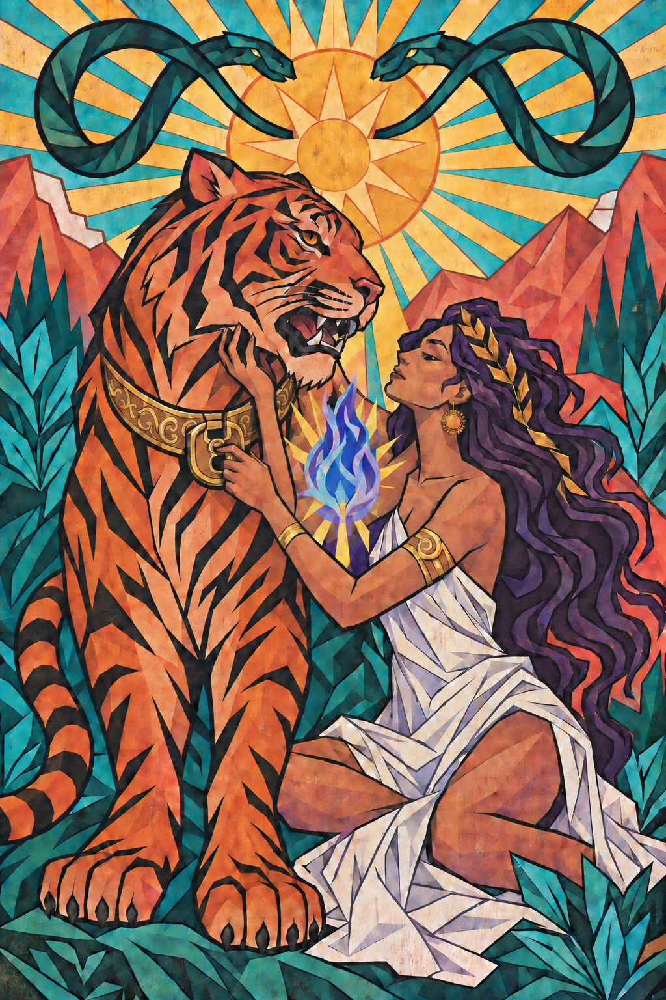
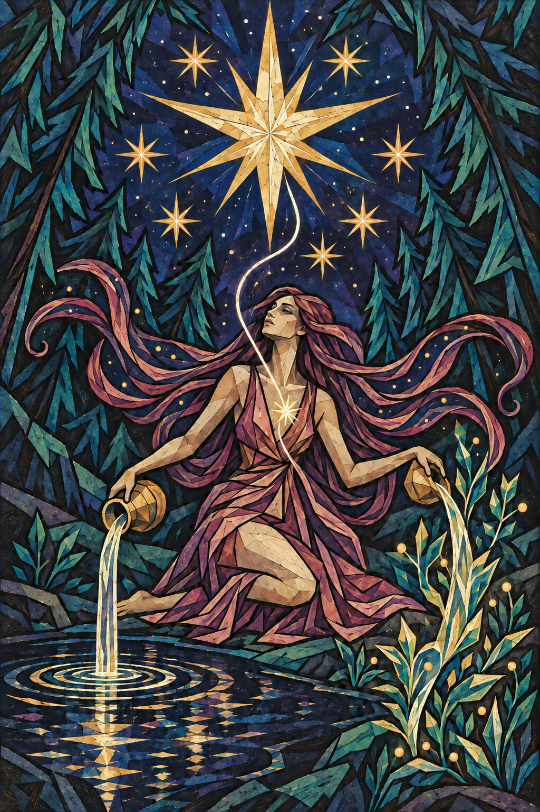

A kultúránk, a nemzetiségünk és a kor, amelybe születünk, nagyban befolyásolja, hogy hogyan látjuk magunkat a világban. Ezt a látásmódot nemzedékeken át a keresztény kultúra formálta. Ez adta az erkölcsi és az értelmezési keretet mindahhoz, ami látható és láthatatlan. Hogy mi a jó, és mi a rossz.
Ezzel szemben, mi most Európában egy olyan generáció vagyunk, akik közül a legtöbben már nem örökölték a szüleik-nagyszüleik vallását.
Ez a szabadság egyfelől nagyszerű, másfelől viszont hatalmas kihívás elé állít minket. Magunknak kell kialakítani, hogy hogyan tekintünk a világra.
Ezt közvetve tesszük, azáltal, hogy létrehozunk egy belső alkotmányos rendet. Alapvetéseket, axiómákat, fundamentumokat nevezünk ki eszmei alapnak, amelyre tudásból építünk egy tornyot tégláról téglára. A torony teteje adja majd meg a pozíciót, ahonnan az életre tekintünk. Innen értelmezzük a világot, hozunk ítéletet igazról, hamisról, fontosról, mellőzhetőről. Itt definiáljuk az identitásunkat. Ami ezen nyugszik, azt tartjuk racionálisnak.
Van-e Isten? Kit szeressek? Mi az utam?
Szinte kollektív traumaként él bennünk, hogy hová vezet, ha egy hatalmat, erőt vagy eszmét megkérdőjelezhetetlenné teszünk. Egy részünkben szinte reflexszerű stresszreakció van, ha valami elvont, misztikus, spirituális, vagy tudományosan mérhetetlen kontextusba kerülünk. Innen nézve, nincs annál lesajnálni valóbb dolog, mint amikor valaki valami olyan dologban hisz, aminek semmilyen racionális alapja nincs.
De vajon létezik abszolút racionális álláspont? Hozzáférhetünk-e a világhoz a saját nézőpontunktól függetlenül? Ezer évvel ezelőtt az ember pont annyira érezte magát okosnak mint most.
Van egy konvencionális közmegegyezés, hogy mi a józan ész, és vannak akik ezt elismerve mégis inkább a bolond kategóriát választják, mert nem akarnak a konvencionális közmegegyezés szerinti életet élni.
A tudományt támadni egyszerűen butaság. Reprodukálható kísérletekkel bizonyított tényeken alapszik. Az adatok alapján jósolni lehet vele.
És bizonyos embereknek ez olyannyira lenyűgöző tud lenni, hogy szinte vallási fanatizmussal helyezik ide minden hitüket, és várnak tőle az élet minden területét lefedő elégedettséget és kiteljesedést. Kész válaszokat keresnek, és implicit mód abban hisznek, hogy ami tudományosan nem bizonyítható, az nincs, vagy nem fontos.
Az életnek van egy olyan része ami nem leírható. Mihelyst megpróbáljuk szavakba fogalmazni, eloszlik. Mi a szépség?

“Mit szeretsz bennem?” Hangzik el a kérdés, ami megválaszolhatatlan. “Mit jelentek neked?” Van aki egy meleg kabát. Van aki egy hűvös nyári szellő. És van aki mint a négy évszak: szinkronba tudsz vele lenni, ám olykor kiszámíthatatlan. A vadsága felébreszti a természet csodálatát.
Ezt hogyan írná le a tudomány? A pszichológia standardizál, kategorizál. Egy szintetikus értelmezési keret, nagyon hasznos eszköz.
A tudományos és strukturált látásmód egy négyzetrácsos hálót terít a világra, majd a kirajzolódó poligon alakjából következtet arra, amit lefed. Megméri, felméri azt. De bármennyire is alapos és a részletekbe menően is nagy felbontású, mindig is digitális marad. Letapogat a sötétben, de nem meríti ki azt, aki vagy.
Az absztrakt eszmei világ aránytalanul nagy teret foglal el bennünk a közvetlenül észlelt, megtapasztalt világhoz képest. A fejünkben élünk.
A tudás, a világról alkotott magyarázatunk egy térkép lehet a felfedezéshez, de nem maga a megismerés tárgya, nem a megismerendő. A logosz az eszközünk, a szolgálónk, de a fejünkben egyeduralkodóvá vált. Mintha a térkép tájnak képzelné magát.
A fejünkben összpontosul a legtöbb figyelmünk, alárendeljük magunkat az identitásunknak. Teljesen azonosulunk vele, miközben kizárjuk és ignoráljuk a testünk érzeteit.
Belefeledkezünk egy virtuális világba, ahol a legtöbben kisebb-nagyobb mértékben hiányolunk valamit. A materiális szükségleteken túl, valami bennünk többre vágyik. Kielégíthetetlen, mert a vágyai után újabb vágyak jönnek. Van bennünk egy űr, amit semmi nem tölt be. Nem találunk utat az önmegvalósításhoz. Vívódunk legbelül, és rettegünk a haláltól. De hogyan kerültünk ide?
Hogyan lehet, hogy az élővilágból egyedül az emberi létezést hatja át az egzisztenciális válság? Valamikor egy érzetre megjelent egy gondolat, és aztán ahelyett, hogy a figyelem visszatért volna az érzeti folytonosságba, a gondolatból született még egy gondolat, fraktálszerű iterációba kezdve. Minden gondolatból továbbágazott egy újabb gondolatba. Az absztrakt gondolkodás hatalmas evolúciós előnyt adott, képesek lettünk elmesélni, amit láttunk, képesek lettünk múltat elemezni és jövőt tervezni. Szinte bármit el tudunk képzelni, összetett módon együttműködni, az írással a tudás pedig halhatatlanná vált. Mintha leszakítottunk volna egy almát a Mindent Tudás Fájáról. A hirtelen szerzett képességhez azonban nem nőttek fel pszichikai készségeink. Megrészegít minket az elme hatalma. A felhőkben lebegünk, miközben nincs a lábunk alatt talaj. Gondoljunk csak bele, hogy mennyire nehéz egy adott ponton tartani a figyelmet.
„Csendesítsd el az elméd” – hangzik az általános utasítás. A legtöbben hallottunk már történeteket hosszú ideig elvonulásban meditáló szerzetesekről, akik minden nehézségen keresztül, kitartó gyakorlással elértek egy megvilágosult állapotot, majd a hátralévő életük mentessé vált minden szenvedéstől.
A keleti filozófia és spirituális hagyományok egyik általános célja az ember felszabadítása – kontextustól függő jelentéssel. Napjainkra bizonyos irányzatok szinte mindent levedlettek magukról, amit a nyugati ember nehezen fogadna be, és ezáltal kulturálisan exportálhatóvá váltak. A mitológiai képek és történetek kvázi tudományos magyarázatokká alakultak át. Miután az elme feladatul kapja önmaga meghaladását, könnyen újabb identitást épít belőle. A vélt gondolati csend vagy mentális üresség egy újabb virtuális sötét szobává válik a már meglévő virtuális világon belül. A belső zsarnok, aki addig végeláthatatlanul forgatta fejünkben a negatív gondolatokat, képes átnevelni magát arra, hogy immár ostorral csapjon le minden kényelmetlen vagy kétes hangra: “Neked itt nincs helyed!”.
Az új identitás a tiszta elme, az állandó boldogság, a „jól vagyok, nincs semmi gond” identitása lesz. A forma megváltozik, de a figyelem és az önazonosítás továbbra is a fejben összpontosul. Előbb-utóbb azonban, amikor a valóság túlterheli a róla alkotott fantáziát, ez a torony is ledől.

Ha a spirituális útkereső felfelé indul, hatalmas próbatétel előtt áll. A jelenkor vallása kikéri magának, hogy vallásnak nevezzék, a dogmáit pedig kényszeres racionalizálással tartja a magasban. Mintha ugyanazon az ajtón próbálná behívni a lelki jólétet, amelyen át az értelmet.
A filozófia jógája - jñāna yoga - elképesztő mentális energiát mozgósít. Az útkeresőnek minden elfogultságát félre kell tennie, minden kor minden irányzatához, bárki leírt vagy elhangzott szavához ugyanazzal a nyitottsággal kell közelítenie. Ha majd minden csomót kibogoz, minden ajtót kinyit az elmében, és még az utolsó kő alá is benéz, csak akkor bizonyosodhat meg minden kétséget kizáróan: amit keres, azt így sosem fogja meglelni. Mi marad a szeretetből, ha logikusnak és szabályszerűnek kell lennie? Milyen az az abszolút béke, amelyet bármiféle tudásnak kell megtámasztania? Az erőfeszítése reménytelen. Végre megpihenhet.
Mi lenne, ha kivennénk egy nap szabadságot önmagunkból, elfelejtve mindent, amit magunkról gondolunk, beleértve minden magunkkal szemben állított szabályt? Egy napig csak menni, és tenni, ami jön, hezitálás nélkül. Mennyire szabad az az élet, amelyben egyetlen napig sem élhetünk így? Talán csak az tart vissza, hogy félünk önmagunktól. Félünk, hogy mennyi baj származna abból, ha feloldanánk a mentális önkorlátozást. Kételkedünk a saját természetünk eredendő jóságában, holott legbelül őrzünk róla egy emléket. A mellkasunk közepén van egy érzés, amely bizalmat ébreszt iránta.
Amikor kapcsolatban vagyok ezzel az érzéssel, akkor a spontaneitás és a felelősség összefér bennem. Figyelek arra, akit szeretek. A szívből hozott döntéseket nem szoktuk megbánni. Még ha olykor fájnak is, érezzük, hogy hűek maradtunk önmagunkhoz, és az történt, aminek történnie kellett.
A tapasztalt világban nincsenek szabályok, csak minták, tettek és következmények. Az eszmei identitáson túli önérzet központja a szívben van, de amint gondolatokkal próbálom megragadni- elveszítem azt, és vak leszek rá. Ahogyan a róka mondja a kis hercegnek: “Jól csak a szívével lát az ember.”
A virtuális térből kitekintve az ember megélt valóságának az alapját a közvetlen testi és érzéki tapasztalat adja. Ha szeretné ezt a megélt valóságot az anyagi világon túlra emelni, ahhoz először a tudatával le kell jönnie, kiszabadulnia a toronyból, és két lábbal megállnia a földön. Felismerni, hogy hol ér véget az anyagi világ, és hol kezdődik valami több. Alámerülni, és meglelni, hogy mi tölti ki belülről. Megismerni, hogy milyen a primitív ösztönök textúrája. Mekkora az akarat mozgatóereje, és milyen forrón ég a szenvedély.
Ezt az utat úgy kell bejárnia, hogy elengedi önmagát, de mégsem épít új identitást a fenomének köré, különben ismét kezelhetetlen erők foglya lesz. A vadságot úgy kell megélnie, hogy nem válhat maga is vadállattá. Akarnia kell, de megőriznie a döntés képességét, hogy mi után nyújtja a kezét. Mintha cérnaszálon kellene kötéltáncot járni. Csak el ne szakadjon. És ha mégis, mihamarabb újra talpra kell állni.

A jógagyakorlónak a múla bandha kristálytiszta képet ad arról, hogy hol van a talaj, hol áll a két lába, és hogyan helyezkedik el a térben egész valója. Pszichikailag is földeli, mintha visszahúzná magát a talajra, majd vasláncokkal kikötné. Csak így biztonságos alábuknia a mélybe.
Az ászanagyakorlás visszahívja a figyelmet a testbe, és arra szólít, hogy tanúi legyünk, amint felébred valami régóta szunnyadó. Hogy hogyan s miként, az az élet alkotói szabadsága. Olykor örömmel, olykor fájdalommal.
A szívhez a testen át vezet az út. Aki egyszer elindul, az megállhat, de a visszafordulás csak illúzió, az élet többé nem érződik teljesnek. A kapu előtt sokszor konfliktus vár. Egy konfliktus áldozatért kiált, a jóga pedig a legnagyobbat kéri: lejönni a toronyból, elengedni mindazt, amit önmagunkról tudni vélünk. Hagyni, hogy a megtapasztalt valóság felülmúlja az arról alkotott elképzelést.
Nem kell tudni semmit, csak figyelni, hogy mi történik. Hagyni, hogy a természet felfedje önmagát és megannyi arcát: az ezerszirmú virágot, amelynek minden szirmán tízezer másik virág nyugszik, s azok minden szirmán újabb százezer. Millió színben, szüntelen kánonban, az egyik hol elhervad, a másik hol épp nyílik, újra meg újra, művészi katarzisban.

🦊🪷🐍